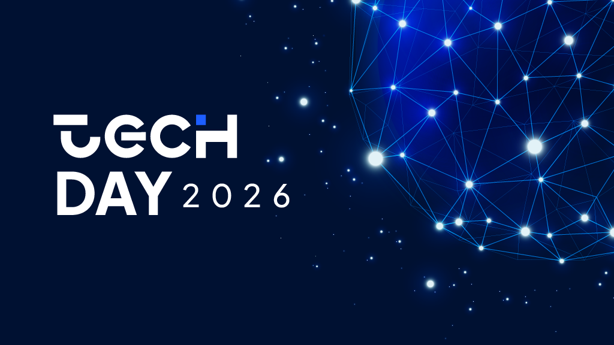

o maior evento voltado para estudantes e profissionais interessados em programação, inteligência artificial, desenvolvimento web, banco de dados e computação em nuvem.

O TechDay 2026 é um evento inovador que reúne estudantes, profissionais e entusiastas da tecnologia para explorar as últimas tendências em programação, inteligência artificial, desenvolvimento web, banco de dados e computação em nuvem. Com palestras inspiradoras, workshops práticos e oportunidades de networking, o TechDay oferece uma experiência única para quem deseja expandir seus conhecimentos e se conectar com a comunidade tecnológica.
Área de atuação: Inteligência Artificial
tema: "Primeiro Passo em Inteligência Artificial"
Ana Silva é uma pesquisadora em inteligência artificial com mais de 5 anos de experiência no campo. Atualmente trabalha em uma empresa de tecnologia líder no desenvolvimento de soluções de IA.

Área de atuação: Desenvolvimento Web
tema: "futuro do Desenvolvimento Web Moderno"
João Souza é um desenvolvedor web com mais de 7 anos de experiência. Atualmente trabalha em uma empresa de tecnologia especializada em soluções web inovadoras.

Área de atuação: Computação em Nuvem
tema: "Computação em Nuvem e Suas Aplicações"
Maria Oliveira é uma especialista em computação em nuvem com mais de 10 anos de experiência. Atualmente trabalha em uma empresa de tecnologia líder no desenvolvimento de soluções em nuvem.

Área de atuação: Banco de Dados
tema: "Banco de Dados: Tendências e Aplicações Práticas"
Carlos Pereira é um especialista em banco de dados com mais de 8 anos de experiência. Atualmente trabalha em uma empresa de tecnologia líder no desenvolvimento de soluções de banco de dados.

email: contato@techday2026.com
telefone: (11) 1234-5678
endereço: Rua da Tecnologia, 123, salvador - ba